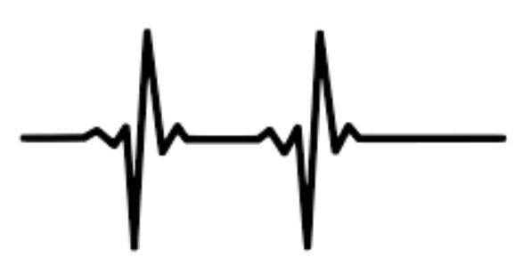

ZooFari [CC BY-SA (https://creativecommons.org/licenses/by-sa/3.0)]

Four Chambers Heart : Mammals
Here, we will learn about the human heart as an example for the functioning of all mammals and birds.
The human heart weighs roughly 300g, and is mostly made of muscle. It consists of four chambers; two atria and two ventricles. The right atrium and right ventricle made up what is called the right heart and are separated by the tricuspid valve. The same goes for the left atrium and left ventricles called left heart and are separated by the mitral valve.
They both have a different role. The right heart is responsible for sending the blood to the lungs to get oxygen, while the left heart sends this blood full of oxygen toward the organs. The two hearts work at the same time, in parallel.
Coeur et vaisseaux (http://www.reseau-canope.fr/corpus/embed/coeur-et-vaisseaux-50.html)
While the right and left ventricles simultaneously fill with blood from the atria, the
atrioventricular valves (tricuspid and mitral) are opened and the pulmonary and aortic
valves are closed. This state is called diastole.
The atria then contract to expel all of the blood they contained into the ventricles. This state is called systole.
Once the ventricles are filled with blood, the atrioventricular valves will close and the pulmonary and aortic valves will open to eject blood while the ventricles contracts. This phase is called the ventricular systole. It is a contraction phase.
It is important to note that the four valves open and close only due to pressure differential. They are one-way valves, which means that the blood can pass only from atria to ventricles, and ventricles to arteries. The valves open when the pressure is higher upstream than downstream, thus when the atria or ventricles contracts.
Those contractions are controlled by the heart itself.
The atria then contract to expel all of the blood they contained into the ventricles. This state is called systole.
Once the ventricles are filled with blood, the atrioventricular valves will close and the pulmonary and aortic valves will open to eject blood while the ventricles contracts. This phase is called the ventricular systole. It is a contraction phase.
It is important to note that the four valves open and close only due to pressure differential. They are one-way valves, which means that the blood can pass only from atria to ventricles, and ventricles to arteries. The valves open when the pressure is higher upstream than downstream, thus when the atria or ventricles contracts.
Those contractions are controlled by the heart itself.
Madhero88 [CC BY-SA (https://creativecommons.org/licenses/by-sa/3.0)]

The electric stimulation is created by the sinus node. It is made of a cluster of cells capable of
producing an electric current of a few millivolts.
From the sinus node, the current spreads the heart muscle by stimulating self excitable cells in the cardiac muscle fibers. It flows in the 2 atria, causing them to contract. Then, it circulates towards the partition separating atria and ventricles, at the level of an electrical relay called atrioventricular node (NAV).
From the atrioventricular node (NAV), the influx progresses simultaneously in the 2 ventricles, the right and the left one, using very fast conducting paths (the Hys bundle and the Purkinje network), up to the tip of the heart, causing the ventricles to contract.
From the sinus node, the current spreads the heart muscle by stimulating self excitable cells in the cardiac muscle fibers. It flows in the 2 atria, causing them to contract. Then, it circulates towards the partition separating atria and ventricles, at the level of an electrical relay called atrioventricular node (NAV).
From the atrioventricular node (NAV), the influx progresses simultaneously in the 2 ventricles, the right and the left one, using very fast conducting paths (the Hys bundle and the Purkinje network), up to the tip of the heart, causing the ventricles to contract.
DrJanaOfficial [CC BY-SA (https://creativecommons.org/licenses/by-sa/4.0)]

Even if the heart is autonomous and beats by itself, some nervous signals can affect the functioning
of the sinus node and thus the cardiac rhythm.
They are two main parts of the nervous system: the sympathetic system and parasympathetic system (cf. “The Nervous System” chapter). The sympathetic system increases the heart frequency, when you run or produce an effort for instance. The parasympathetic system, on the other hand, reduces the heart rate when a high cardiac frequency is not needed anymore. The nerves of the parasympathetic system can sometimes be stimulated by important emotions. It causes a decrease in the heart rate and blood pressure, causing faintness. The sinus node can also be influenced by hormones such as adrenaline (cf. “Hormones and endocrine system” chapter) or the body temperature.
They are two main parts of the nervous system: the sympathetic system and parasympathetic system (cf. “The Nervous System” chapter). The sympathetic system increases the heart frequency, when you run or produce an effort for instance. The parasympathetic system, on the other hand, reduces the heart rate when a high cardiac frequency is not needed anymore. The nerves of the parasympathetic system can sometimes be stimulated by important emotions. It causes a decrease in the heart rate and blood pressure, causing faintness. The sinus node can also be influenced by hormones such as adrenaline (cf. “Hormones and endocrine system” chapter) or the body temperature.
Pattern of 2 heart beats on an electrocardiogram. CC0 1.0

To check someone’s heart rhythm and electrical activity, an electrocardiogram (ECG) can be performed. Sensors are arranged on the body skin. They detect electrical signals produced by a heart beat and report them as a graph analysed by doctors.